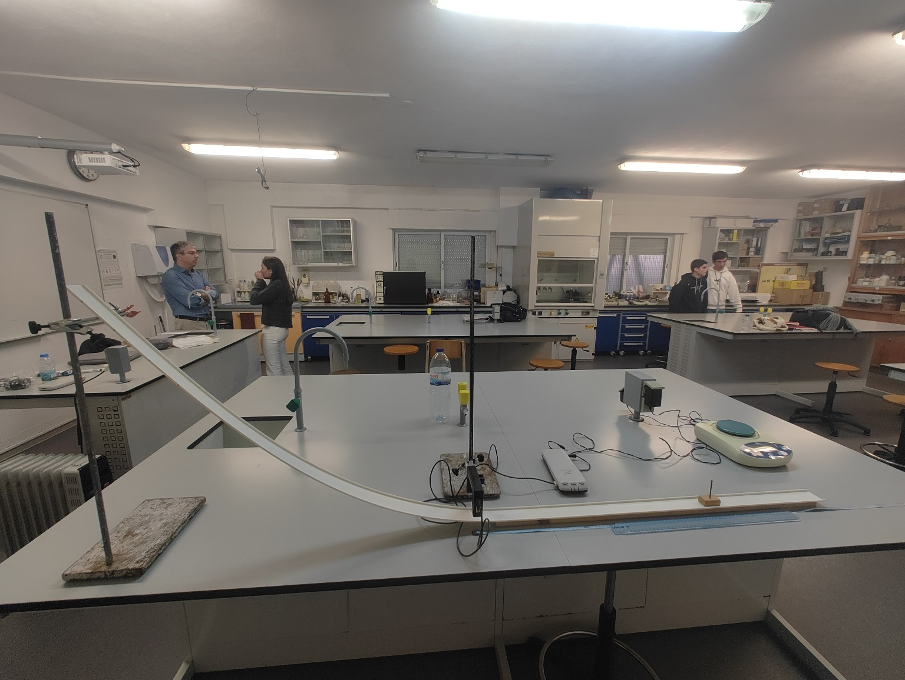

COMO SE RELACIONA O ATRITO COM A VELOCIDADE INICIAL
Testa o que aprendeste
Kahoot

Vamos começar
Recursos extra
Força de atrito. youtube
Aplicando as Leis de Newton
O movimento retilíneo uniformemente retardado
Colaco, E. N10047
Medeiros, P. N23178
Rosado, T. N23200
11C